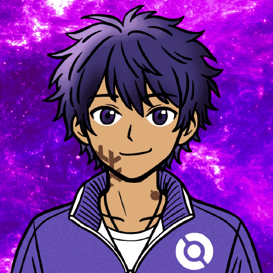

Hi, I'm Javier Castro (Javier C)
A developer passionate about programming and open-source software. I mainly focus on system tool development and improving Linux ecosystems.
Languages:
Scripting and Systems:
I actively collaborate on various open-source projects, focusing on launchers, packaging, and system environments:
- TrinityLauncher Development of an efficient launcher for mc-bedrock.
- Neko-Void Technical contributions to the project's core.
- Void Linux Participating in the development and maintenance of the distribution's ecosystem.